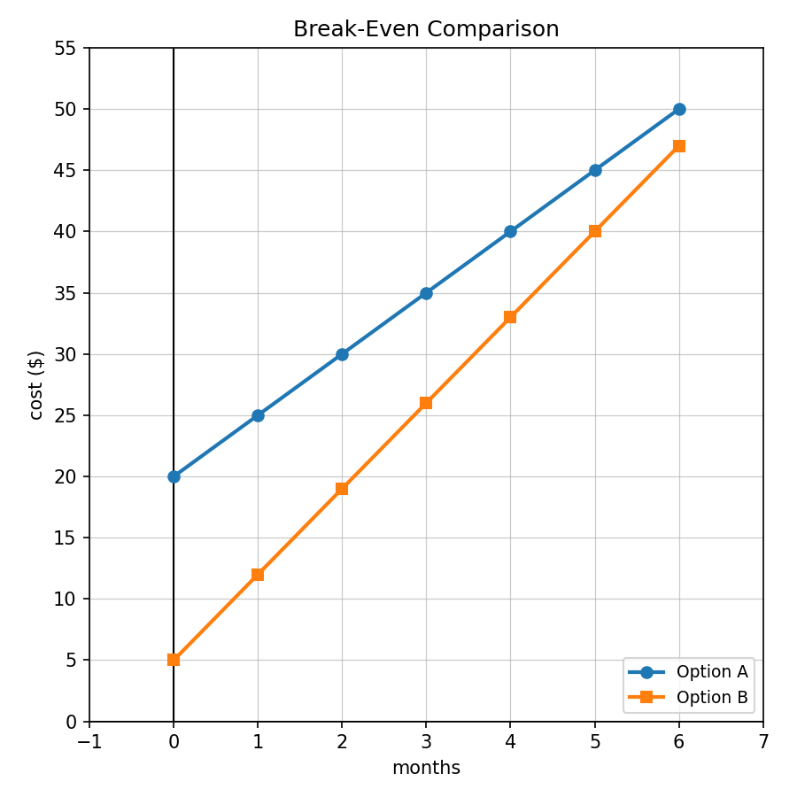
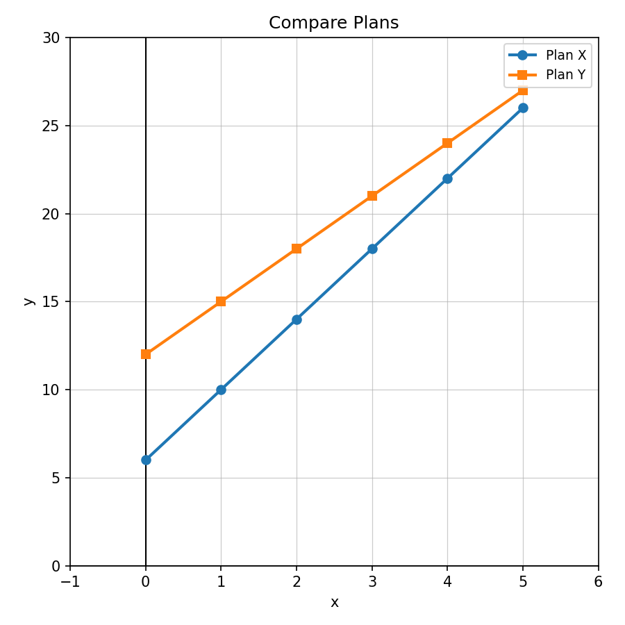

In the equation $15+4x=39$, what does the solution represent if $x$ is the number of items purchased?
A school club has already raised $35$ dollars and earns $9$ dollars for each car washed. Write and solve an equation to find how many cars must be washed to raise $125$ dollars.
Use the Break-Even Comparison graph. Estimate when the two options cost about the same, then explain how an equation could confirm your estimate.

Design a real-world problem that requires writing, solving, and interpreting an equation. Include one detail that forces the solver to decide whether a rounded answer makes sense.
Solve: $$x+12\ge 30$$
Solve: $$5p>45$$
Determine whether $0$ is a solution to $x>-1$.
Describe how to graph $x\le 2$ on a number line.
Solve and interpret: $$7x+5\le 40$$
You have $75$ dollars. Each notebook costs $4$ dollars and you also need a $15$ calculator. Write and solve an inequality for the number of notebooks you can buy.
A student says $x<8$ and $x\le 8$ have the same graph because both shade left. Critique the statement.
Create a situation with two constraints, one using $\le$ and one using $\ge$. Write both inequalities and explain the values that satisfy both.
Does the table match a starting value of $8$ and a rate of change of $5$?
| $x$ | 0 | 1 | 2 | 3 |
|---|---|---|---|---|
| $y$ | 8 | 13 | 18 | 23 |
Use Compare Plans. Which plan has the larger starting value? Which has the larger rate of change?

What evidence would prove that a graph, table, and equation all represent the same linear relationship? Give at least three specific checks.
A table, graph, and equation are supposed to represent the same plan, but one point in the table does not fit. Create such a set of representations, identify the mismatch, and revise it.